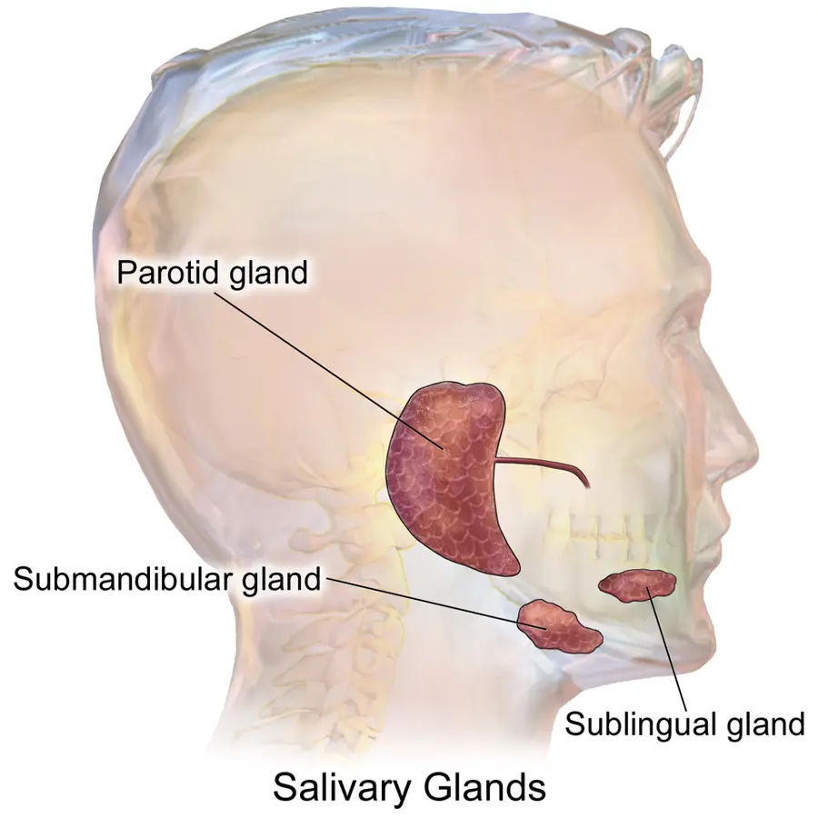

LOT_025 — S1.9 Bouche et pharynx — Phase A : monographie du SSP et dix diagnostics différentiels
Une bouche sèche, une gorge douloureuse, une masse ou une plaie de la muqueuse relèvent surtout d’infections banales, de médicaments ou de traumatismesS4S15S18. Le médecin exclut d’abord l’abcès périamygdalien, qui peut obstruer les voies aériennes, puis le carcinome épidermoïde, qu’une ulcération persistant plus de trois semaines doit faire rechercherS4S22S10. Il décrit ensuite la lésion, cherche le médicament ou le terrain en cause et choisit l’examen qui répond à la questionS6S12.
1. Définition
La xérostomie désigne la sensation subjective de bouche sèche, tandis que l’hyposialie désigne une baisse mesurée du débit salivaireS12. Une ulcération buccale correspond à une perte de substance de la muqueuse, et la pharyngite à une inflammation du pharynx, le plus souvent viraleS5S4. La masse buccale ou pharyngée correspond à toute tuméfaction perçue dans la bouche, la gorge ou une glande salivaireS4S9.
2. Épidémiologie (Suisse, puis Europe)
L’angine ou pharyngite représente environ 4 % des visites en cabinet, et elle reste virale dans 80 à 90 % des casS4. Le streptocoque du groupe A cause 5 à 15 % des angines de l’adulte et 20 à 30 % de celles de l’enfantS3. Aucune source suisse lue ne permet encore de chiffrer le taux de consultation pour pharyngite en Suisse ; le chiffre des HUG (Hôpitaux universitaires de Genève) sert donc de repèreS4.
Les indicateurs de fréquence fondent l’ordre gelé des dix monographies ; la gravité ajoute deux rangs d’exclusion, E1 et E2. Ces indicateurs mêlent prévalences de lésions et incidences, si bien que les limites des données rendent l’ordre entier indicatif, surtout entre prévalences et incidencesS16S17S18.
Fréquence et gravité : pourquoi cet ordre
| Rang | Diagnostic | Donnée de fréquence | Source |
|---|---|---|---|
| DX.1 | Pharyngite aiguë | Environ 4 % des visites en cabinet ; origine virale dans 80 à 90 % des cas. | S4 |
| DX.2 | Xérostomie médicamenteuse | Bouche sèche chez 32,1 % des personnes sous médicaments contre 16,9 % des autres, en Suède : association et non prévalence attribuable. | S15 |
| DX.3 | Candidose buccale | 11,8 % des personnes de 65 à 95 ans vivant à domicile au Danemark, en point-prévalence. | S16 |
| DX.4 | Stomatite aphteuse récidivante | Antécédents chez 9,7 % des adultes de 25 à 75 ans à Ljubljana. | S17 |
| DX.5 | Ulcération buccale traumatique | Ulcère traumatique chez 7,1 % des plus de 30 ans à Oviedo. | S18 |
| DX.6 | Gingivostomatite herpétique | Une gingivostomatite pour 303 passages aux urgences pédiatriques de Paris ; 372 sur 702 étaient herpétiques. | S19 |
| DX.7 | Maladie de Sjögren | Prévalence de 3,8 pour 10 000 habitants en Italie. | S20 |
| DX.8 🚩 E1 | Abcès périamygdalien | 21,8 cas pour 100 000 habitants par an à Aarhus avant la pandémie. | S21 |
| DX.9 🚩 E2 | Carcinome épidermoïde buccal ou oropharyngé | Cavité buccale et pharynx : 791 nouveaux cas par an chez l’homme et 372 chez la femme en Suisse. | S23 |
| DX.10 | Sialolithiase sous-mandibulaire | 7,27 à 14,10 cas pour 100 000 personnes-années au Danemark. | S24 |
Le rang de fréquence fixe l’ordre de lecture, tandis que le rang E fixe l’ordre d’exclusion au lit du maladeS4S10. L’abcès périamygdalien passe donc en tête de l’arbre décisionnel, alors qu’il n’occupe que le huitième rang de fréquence.
Limites des chiffres
- La plupart des chiffres sont des prévalences de lésions mesurées lors de dépistages, et non des incidences en soins primairesS16S17S18.
- L’étude suédoise ne permet pas de séparer l’effet de la maladie de celui des médicaments sur la sécheresseS15.
- Chez les hommes de 71 à 92 ans au Royaume-Uni, 31 % rapportent 1 à 2 symptômes de bouche sèche et 20 % en rapportent 3 à 5S27.
- La Ligue suisse contre le rhumatisme indique qu’une personne sur 2 000 à 10 000 est atteinte, avec neuf femmes pour un hommeS8.
- L’incidence danoise de l’abcès périamygdalien est montée à 26,9 pour 100 000 après la levée des mesures sanitairesS21.
- Le cancer de la cavité buccale et du pharynx a une survie relative à cinq ans de 54 % chez l’homme et de 63 % chez la femme en SuisseS23.
Le carcinome de la bouche et du pharynx touche surtout l’homme de plus de 60 ans exposé au tabac et à l’alcoolS4. Le HPV (papillomavirus humain) en fait aussi une maladie du sujet plus jeuneS10.
Carcinome de la bouche et du pharynx : terrain
- Le carcinome épidermoïde représente environ 90 % des cancers ORL (oto-rhino-laryngologique) selon le CHUV (Centre hospitalier universitaire vaudois)S10.
- Les HUG chiffrent le risque à 5 à 25 fois pour le tabac et à 40 à 50 fois pour l’alcool associé au tabacS4.
- Le HPV 16 touche surtout l’oropharynx, en particulier l’amygdale et la base de la langueS4.
- Le carcinome lié au HPV survient plus tôt : l’âge médian du diagnostic atteint 53 ans, contre 66 ans sans HPVS10.
- Les HUG retiennent l’âge supérieur à 60 ans et le sexe masculin comme terrains habituels de ces tumeursS4.
Les plaintes de la bouche et de la gorge pèsent lourd au cabinet, car les HUG estiment que 30 % des consultations du généraliste comportent une plainte ORLS4. L’enseignement des HUG donne une incidence des aphtes de 10 à 20 % et une prévalence de 1 %S5. Il les décrit comme l’atteinte récurrente la plus fréquente de la muqueuse buccaleS5.
3. Physiopathologie
La salive protège tous les tissus de la bouche, et sa production quotidienne atteint 0,8 à 1,5 litreS12. La base anatomo-fonctionnelle montre les trois paires de glandes majeures et la commande qui les fait sécréterS25S12. Cette commande parasympathique agit sur les récepteurs muscariniques M3 ; c’est pourquoi les anticholinergiques assèchent la boucheS12.
Base à connaître : glandes salivaires et commande de la sécrétion
Les trois paires de glandes salivaires majeures. L’illustration en couleurs provient de Blausen Medical, sous licence CC BY 3.0S25.

Le lecteur doit d’abord regarder seul cette illustration, puis chercher lui-même les trois glandes.
La copie annotée (les trois paires de glandes salivaires majeures) porte des repères numérotés, qui sont décrits ci-dessous.
Ce que l'image décide. Une tuméfaction rythmée par les repas siège sur une glande et son canal, tandis qu’une sécheresse diffuse traduit une baisse de sécrétion de toutes les glandesS12.

Les fibres parasympathiques de la parotide viennent du nerf glossopharyngien par le ganglion otiqueS12S13. Celles des glandes sous-mandibulaire et sublinguale viennent du nerf facial par la corde du tympan et le ganglion sous-mandibulaireS12S13.
L’acétylcholine agit sur les récepteurs muscariniques M3 des cellules acineuses et déclenche une sécrétion abondante de salive aqueuseS12. La plupart des anticholinergiques bloquent ces récepteurs et réduisent la sécrétion, tandis que la pilocarpine les stimuleS12S13.
Au repos, un débit de 0,3 à 0,5 mL/min est normal ; un débit de 0,01 à 0,1 mL/min définit l’hyposialieS12. Après stimulation, le débit normal atteint 1 à 2 mL/min, et un débit inférieur à 0,7 mL/min est considéré comme réduitS12.
De nombreux médicaments réduisent la salive : la revue de Barcelone cite 70 % d’adultes traités atteints, chiffre de seconde main plus élevé que les 32,1 % mesurés en SuèdeS12S15.
Médicaments qui assèchent la bouche : pourquoi
- Les antidépresseurs sérotoninergiques, comme la fluoxétine, provoquent souvent une xérostomieS12.
- Certains antihistaminiques, surtout de première génération, ont un effet antimuscarinique qui assèche la bouche et endortS12.
- Les diurétiques de l’anse et épargneurs de potassium agissent sur le sodium, le chlore et le potassium, qui participent à la production de la saliveS12.
- Le goût et la mastication déclenchent la sécrétion réflexe, que l’odorat, la vue et la pensée renforcentS12.
- Après stimulation, la parotide fournit plus de 50 % de la salive sécrétéeS12.
- La baisse de salive entraîne déminéralisation de l’émail, caries rapides, candidose et perte des propriétés antimicrobiennes de la saliveS12.
Trois mécanismes expliquent l’essentiel des plaintes, que le tableau des sièges relie aux dix diagnostics. Une baisse de la salive favorise la candidose et les lésions, tandis que le calcul ou la sténose obstruent le canal salivaireS6S9. Par déduction, la glande gonfle au moment des repas, car le goût et la mastication déclenchent alors la sécrétion qui ne peut plus s’écoulerS12S9. Une infection de l’amygdale peut gagner l’espace périamygdalien, et une muqueuse exposée au tabac et à l’alcool peut devenir cancéreuseS4.
Quatre sièges, quatre mécanismes
| Siège | Mécanisme | Diagnostics |
|---|---|---|
| Glandes salivaires | Baisse de sécrétion par médicament ou maladie auto-immune ; obstacle canalaire par un calculS12S8S9. | DX.2, DX.7, DX.10 |
| Muqueuse buccale | Infection fongique ou virale, ulcération immunitaire ou traumatiqueS6S5. | DX.3, DX.4, DX.5, DX.6 |
| Amygdales et espace périamygdalien | Infection virale ou streptococcique, puis collection purulenteS4S3. | DX.1, DX.8 |
| Épithélium malpighien | Transformation maligne sous l’effet du tabac, de l’alcool ou du HPVS4S10. | DX.9 |
La sécheresse et la candidose se renforcent souvent, car la xérostomie liée aux anticholinergiques prive la muqueuse de sa protectionS6S12.
4. Démarche diagnostique
Le médecin exclut d’abord les urgences 🚩 E1 et E2, puis les drapeaux rouges sans rangS4S10. L’abcès périamygdalien et les infections profondes du cou peuvent en effet menacer les voies aériennesS4S22. Il range ensuite la plainte dans un profil, sécheresse, ulcération, plaque, gorge douloureuse ou masse, avant de nommer la lésionS6S5.
Urgences à exclure d’abord : E1, E2, puis drapeaux rouges
| Rang | Constat | Conduite |
|---|---|---|
| 🚩 E1 — Abcès périamygdalien | Douleur pharyngée unilatérale, otalgie réflexe, aphagie, bombement du voile, trismus, luette déviée. | Avis ORL urgent : ponction ou drainage, hydratation et antibiotique intraveineuxS4. |
| 🚩 E2 — Carcinome épidermoïde | Ulcération qui ne guérit pas, masse unilatérale et progressive, otalgie référée. | Avis ORL si les symptômes persistent plus de trois semaines ; panendoscopie avant tout traitementS10S4. |
| Épiglottite | Odynophagie, voix étouffée, dyspnée brusque, stridor et tirage inspiratoire. | Urgence des voies aériennesS4. |
| Angine de Ludwig | Infection du plancher buccal avec langue moins mobile et plancher induré. | Hospitalisation, scanner injecté et antibiotiqueS4. |
| Abcès para- ou rétropharyngé | Dysphonie, dyspnée, torticolis, trismus, tuméfaction cervicale. | Scanner injecté, antibiotique intraveineux, parfois cervicotomieS4. |
Les HUG enseignent des signaux d’alerte ORL simples, car le premier signe d’une affection générale parfois mortelle est souvent ORLS4.
Signaux d’alerte ORL selon les HUG
- Une plainte unilatérale, progressive, qui dure plus de trois semaines chez un patient exposé aux facteurs de risque fait penser à une tumeurS4.
- Les HUG retiennent comme drapeaux rouges au-delà de trois semaines la dysphonie, l’otalgie à tympan normal et l’otite séreuse de l’adulteS4.
- Ils y ajoutent les lésions buccales, la masse cervicale, l’épistaxis récidivante et l’odynodysphagieS4.
- Une adénopathie cervicale chez un adulte de plus de 50 ans fait aussi rechercher un carcinome de l’amygdale lié au HPV 16S4.
Le raisonnement pas à pas montre l’erreur classique du débutant : traiter une gorge douloureuse unilatérale comme une angine banaleS4.
Raisonnement pas à pas : la gorge qui fait mal d’un seul côté
- Situation : une douleur pharyngée unilatérale avec otalgie réflexe et aphagie fait évoquer un abcès périamygdalienS4.
- Étape 1, voies aériennes : le médecin recherche une dyspnée, un stridor ou une voix étouffée, signes d’une menace respiratoireS4.
- Étape 2, examen : il cherche le bombement du voile, le trismus et la déviation de la luette, qui signent la collectionS4.
- Étape 3, décision : il adresse à l’ORL, qui ponctionne ou incise selon les HUG ; par raisonnement, un antibiotique seul ne vide pas l’abcèsS4.
- Étape 4, à prévoir : l’obstruction des voies aériennes et le syndrome de Lemierre figurent parmi les complications, rares mais gravesS22.
- Erreur du débutant : appliquer le score de Centor à cette gorge unilatérale ; par raisonnement, ce score sert à trier la pharyngite et non l’abcèsS2S4.
5. Anamnèse ciblée et drapeaux rouges
L’anamnèse précise la durée, les récidives et le retentissement sur l’alimentation, car une lésion persistante change la conduiteS5S10. Les symptômes caractérisés un à un orientent vers la glande, la muqueuse, l’amygdale ou une tumeurS6S4S9. Les questions ciblées recherchent ensuite les médicaments, le terrain et les expositionsS6S8S4.
Chaque symptôme : typique ou non, et pourquoi
| Symptôme | Typique de | Pourquoi | Piège |
|---|---|---|---|
| Gorge douloureuse, fièvre, sans toux | Pharyngite aiguë (DX.1). | L’inflammation des amygdales réveille la douleur à la déglutitionS4. | L’origine reste virale dans 80 à 90 % des casS4. |
| Bouche sèche sous un traitement nouveau | Xérostomie médicamenteuse (DX.2). | Les anticholinergiques bloquent les récepteurs M3 des glandesS12. | La sensation ne prouve pas une baisse du débitS12. |
| Dépôts blanchâtres sur muqueuse rouge | Candidose buccale (DX.3). | Le champignon prolifère sur une muqueuse fragiliséeS6. | Une plaque non détachable demande un autre raisonnement. |
| Ulcères ronds récidivants à fond jaune | Stomatite aphteuse récidivante (DX.4). | Les aphtes guérissent puis récidivent sans maladie généraleS5. | Une durée de plus de trois semaines impose un bilanS5. |
| Ulcère au contact d’une dent ou d’une prothèse | Ulcération traumatique (DX.5). | Le frottement répété blesse la muqueuseS18. | La guérison après correction doit être vérifiéeS14. |
| Fièvre et gencives douloureuses chez le petit enfant | Gingivostomatite herpétique (DX.6). | La primo-infection herpétique atteint gencives et muqueuseS19S4. | L’âge médian atteint 22 mois aux urgences parisiennesS19. |
| Bouche et yeux secs, fatigue | Maladie de Sjögren (DX.7). | La maladie auto-immune atteint les glandes exocrinesS8. | Elle devient systémique dans près d’un tiers des casS8. |
| Douleur unilatérale, trismus, aphagie | Abcès périamygdalien (DX.8). | La collection repousse le voile et irrite le muscle ptérygoïdienS4. | Une dyspnée annonce une menace respiratoireS4. |
| Ulcération qui ne guérit pas, otalgie référée | Carcinome épidermoïde (DX.9). | La tumeur infiltre la muqueuse et les nerfs voisinsS10. | Un aphte qui ne guérit pas peut être un cancerS10. |
| Gonflement sous-mandibulaire au repas | Sialolithiase (DX.10). | Le calcul bloque l’évacuation de la salive stimuléeS9. | La fièvre et le pus signalent une sialadéniteS9. |
Questions ciblées et drapeaux rouges
- Le médecin relève tous les médicaments, car la xérostomie est très souvent liée aux médicaments anticholinergiquesS6.
- Il recherche des yeux secs, des articulations douloureuses et une fatigue, qui orientent vers une maladie de SjögrenS8.
- Il recherche le tabac et l’alcool, qui multiplient le risque de carcinome, et une exposition au HPV pour l’oropharynxS4.
- Il recherche une fièvre, une toux ou une rhinorrhée, qui orientent vers une pharyngite viraleS4S2.
- Il recherche des ulcérations génitales, une diarrhée ou des signes digestifs, car Behçet, maladie inflammatoire intestinale, VIH et maladie cœliaque imitent les aphtesS5.
- Il recherche un gonflement qui survient à chaque repas, signe d’obstacle salivaireS9.
- Les drapeaux rouges sont la dyspnée, le stridor, le trismus, la voix étouffée, l’ulcération de plus de trois semaines, la masse unilatérale progressive et l’otalgie référéeS4S10S14.
La maladie de Sjögren dépasse souvent la bouche : ses signes généraux et son évolution par poussées orientent le diagnosticS8.
Maladie de Sjögren : signes généraux et évolution
- La fatigue extrême et les douleurs articulaires et musculaires, surtout matinales, comptent parmi les troubles les plus fréquentsS8.
- Les troubles digestifs, les ganglions gonflés, les altérations de la peau, la fièvre et le gonflement des glandes salivaires complètent le tableauS8.
- Les atteintes des poumons, du foie ou des reins restent rares et marquent les formes gravesS8.
- La maladie évolue souvent par poussées, avec des phases calmes suivies d’une aggravation brutale de l’épuisement ou des douleursS8.
- Elle peut s’associer au lupus érythémateux systémique, et l’inflammation comme la cortisone fragilisent les osS8.
6. Examen physique ciblé, région par région
Le médecin vérifie d’abord la respiration et l’état général, puis il inspecte la cavité buccale et examine l’oropharynx. Il palpe ensuite les glandes salivaires et les aires ganglionnaires du couS4S9. Il termine par les signes extra-buccaux, oculaires, cutanés ou articulaires, quand ils peuvent changer le diagnosticS8S5.
Région 2 — Cavité buccale
- Le médecin décrit chaque ulcération : forme, fond, halo et taille, car l’aphte typique est rond, à fond jaune ou gris et à halo inflammatoireS5.
- Il distingue l’aphte mineur de moins de 5 mm, le majeur de plus de 10 mm et la forme herpétiforme, faite de petits ulcères multiplesS5.
- Il recherche des dépôts gris-blanchâtres qui se détachent difficilement et révèlent une muqueuse rouge vif, aspect de la mycoseS6.
- Il recherche une dent ou une prothèse qui blesse, cause d’ulcération traumatiqueS18.
Région 3 — Oropharynx
- Le médecin recherche un exsudat amygdalien, critère du score de CentorS2.
- Il recherche un bombement du voile, un trismus et une déviation de la luette, signes de l’abcès périamygdalienS4.
- Il ne force pas l’examen en cas de menace respiratoire, car l’épiglottite impose d’abord la protection des voies aériennesS4.
Région 4 — Glandes salivaires
- Le médecin palpe la parotide et la glande sous-mandibulaire et observe la salive qui sort des canauxS9S25.
- Une glande gonflée et douloureuse aux repas oriente vers un calcul ou une sténose canalaireS9.
- Il palpe la parotide, car la Ligue suisse demande d’en rechercher le gonflement dans la maladie de SjögrenS8.
Région 5 — Cou et ganglions
7. Approche syndromique
Le médecin range la plainte dans cinq syndromes, qui commandent chacun une conduite différenteS4S6S9. Il tient compte de leur coexistence, car une bouche sèche favorise une candidoseS6. Il garde enfin en tête le lichen plan buccal et la leucoplasie, qui peuvent imiter une plaque ou une ulcération sans figurer dans la listeS5S4.
Cinq syndromes, cinq conduites
| Syndrome | Indices | Conduite |
|---|---|---|
| Gorge douloureuse | Fièvre, exsudat, adénopathies, absence de toux. | Score de Centor, puis abstention, test rapide ou antibiotiqueS2. |
| Bouche sèche | Médicaments, yeux secs, caries. | Revue des traitements, recherche d’une maladie de SjögrenS6S8. |
| Ulcération | Ulcère rond récidivant, traumatique ou persistant. | Correction de la cause, réévaluation, biopsie au-delà de trois semainesS5S14. |
| Plaque ou érosion | Dépôts blanchâtres, vésicules, gingivite. | Antifongique ou traitement de l’herpès selon l’aspectS6S19. |
| Masse | Glande gonflée au repas, ganglion dur, masse unilatérale. | Échographie ou sialendoscopie ; avis ORL et panendoscopie si suspicionS9S11. |
8. Diagnostic positif et critères
Le diagnostic réunit un profil clinique et l’examen qui le confirme, que résume le tableau des dix diagnosticsS2S5S8. Le score de Centor trie la pharyngite selon des critères de la SSI (Société suisse d’infectiologie) qui décident du test rapide et de l’antibiotiqueS2. Les diagnostics hors liste restent à rechercher, car leur absence des monographies ne les exclut pasS4S5.
Pharyngite : score de Centor selon la SSI
- La SSI compte un point pour chaque critère : absence de toux, exsudats amygdaliens, fièvre ou température supérieure à 38 °C, adénopathie cervicale antérieure sensibleS2.
- Avec 0 à 2 points, la SSI ne demande ni frottis ni traitementS2.
- Avec 3 à 4 points, elle propose un test rapide chez l’adulte et chez l’enfant de plus de 3 ans si une antibiothérapie est envisagéeS2.
- L’antibiotique ne se discute qu’avec 3 à 4 points et un test rapide positif, et l’observation sans antibiotique reste possible même dans ce casS2.
- La SSI retient le score de Centor, le plus utilisé en Suisse, plutôt que le score de McIsaac des recommandations françaisesS2.
La stomatite aphteuse récidivante se reconnaît à trois formes cliniques dont la taille et la durée diffèrentS5.
Aphtes : trois formes et leur évolution
- La forme mineure représente 80 % des cas, avec des ulcères de moins de 5 mmS5.
- La forme majeure représente 10 % des cas, avec des ulcères de plus de 10 mm qui peuvent durer jusqu’à 6 semainesS5.
- La forme herpétiforme représente 5 à 10 % des cas, avec de petits ulcères multiplesS5.
- Les poussées comptent 1 à 5 ulcères, qui durent 8 à 15 jours et siègent sur la muqueuse non kératiniséeS5.
- La maladie apparaît dans l’enfance ou l’adolescence et entre souvent en rémission spontanée vers la troisième décennieS5.
- Une histoire familiale se retrouve dans 30 à 40 % des casS5.
Les dix diagnostics retenus
| DX | Signe clé | Examen qui tranche | Mécanisme | Conduite immédiate | Rang |
|---|---|---|---|---|---|
| DX.1 — Pharyngite aiguë | Fièvre, exsudat, absence de touxS2. | Score de Centor, test rapide si utileS2. | Infection virale dans 80 à 90 % des casS4. | Antalgie, abstention possibleS2. | 1 |
| DX.2 — Xérostomie médicamenteuse | Sécheresse sous anticholinergiqueS6. | Revue des traitementsS6. | Blocage des récepteurs M3S12. | Réduire la charge anticholinergiqueS6. | 2 |
| DX.3 — Candidose buccale | Dépôts blanchâtres sur muqueuse rougeS6. | Aspect cliniqueS6. | Prolifération fongique sur bouche sècheS12. | Antifongique et soins de boucheS6S7. | 3 |
| DX.4 — Stomatite aphteuse récidivante | Ulcères ronds récidivantsS5. | Clinique, sans bilan si typiqueS5. | Atteinte immunitaire ou génétiqueS5. | Traitement localS5. | 4 |
| DX.5 — Ulcération buccale traumatique | Ulcère au contact d’un agent blessantS18. | Contrôle à trois semainesS14. | Frottement répétéS18. | Supprimer la causeS14. | 5 |
| DX.6 — Gingivostomatite herpétique | Petit enfant fébrile, gencives atteintesS19. | CliniqueS19. | Primo-infection herpétiqueS4. | Hydratation surveilléeS4. | 6 |
| DX.7 — Maladie de Sjögren | Bouche et yeux secsS8. | Anticorps anti-SSA/Ro et anti-SSB/LaS8. | Atteinte auto-immune des glandes exocrinesS8. | Avis rhumatologiqueS8. | 7 |
| DX.8 — Abcès périamygdalien | Douleur unilatérale, trismus, voile bombéS4. | PonctionS4. | Collection purulente périamygdalienneS4. | Avis ORL urgentS4. | 8 · 🚩 E1 |
| DX.9 — Carcinome épidermoïde buccal ou oropharyngé | Ulcération persistante, otalgie référéeS10. | Biopsie et panendoscopieS10S11. | Tabac, alcool, HPVS4. | Avis ORLS10. | 9 · 🚩 E2 |
| DX.10 — Sialolithiase sous-mandibulaire | Glande gonflée au repas, par raisonnementS12. | SialendoscopieS9. | Calcul obstruant le canalS9. | Avis ORLS9. | 10 |
Chaque diagnostic entre dans la liste parce qu’il concurrence réellement les autres devant la même plainte ; son rang suit la fréquence, et le rang E sa gravitéS2S4S10.
Diagnostics hors liste
- Les Hôpitaux universitaires de Genève (HUG) citent l’herpangine, la mononucléose, l’angine de Plaut-Vincent et la syphilis parmi les angines à distinguerS4.
- Les maladies de Behçet, les maladies inflammatoires intestinales, le VIH et la maladie cœliaque provoquent des ulcérations qui imitent les aphtesS5.
- Les HUG rangent aussi les abcès para- et rétropharyngés, l’angine de Ludwig, la fasciite et l’épiglottite parmi les infections à reconnaîtreS4.
- Le lichen plan buccal et la leucoplasie peuvent prendre l’aspect d’une plaque ; ils exigent un avis spécialisé si le doute persisteS14.
9. Examens complémentaires
La plupart des plaintes se diagnostiquent cliniquement ; le test rapide du streptocoque ne sert que s’il change le traitementS2. La mesure du débit salivaire et le bilan de Sjögren objectivent la sécheresseS12S8. L’imagerie et l’endoscopie explorent la masse, et la biopsie tranche devant une lésion persistanteS9S11S14.
Test de diagnostic rapide du streptocoque
- Indication : un score de Centor de 3 à 4, chez l’adulte comme chez l’enfant de plus de 3 ans, si l’antibiotique est envisagéS2.
- Piège : la SSI ne recommande pas la culture du frottis de gorgeS2.
- Antécédent de rhumatisme articulaire aigu : il justifie un test quel que soit le score de CentorS3.
- Autre risque : l’immunosuppression ou la migration récente d’un pays en développement justifient un test dès un score de 3S3.
Mesure du débit salivaire
- Valeurs : les seuils de débit au repos et après stimulation figurent dans la base anatomo-fonctionnelle du point 3S12.
- Méthode : le débit se mesure au repos puis après stimulation, car la stimulation révèle une réserve que le repos masqueS12.
- Recherche danoise : l’équipe de Copenhague retient un débit au repos inférieur ou égal à 0,10 mL/min comme hyposialieS26.
Bilan de la maladie de Sjögren
- Anticorps : la Ligue suisse mentionne les anticorps anti-SSA/Ro et anti-SSB/LaS8.
- Yeux : le test de Schirmer mesure la sécrétion lacrymale, mais il ne suffit pas au diagnosticS8.
- Histologie : la biopsie labiale soutient le diagnostic si elle montre une inflammation des glandes accessoiresS8.
- Piège : cette inflammation existe sans maladie auto-immune jusqu’à 10 % des cas, si bien que l’indication se pèseS8.
Imagerie et endoscopie
- Sialendoscopie : elle explore et traite calculs, sténoses et inflammations des canaux salivairesS9.
- Échec et complication : elle échoue dans moins de 10 % des cas, et la perforation du canal reste sa complication la plus fréquenteS9.
- Infection profonde : le scanner injecté permet d’explorer l’angine de Ludwig et l’abcès para- ou rétropharyngéS4.
- Panendoscopie : sous anesthésie générale, elle explore bouche, pharynx, larynx, bronches et œsophage ; la fenêtre dédiée la détailleS11.
Panendoscopie
- Déroulement : le CHUV la réalise sous anesthésie générale, par étapes ORL, bronchique et œsophagienne, avec caméras rigides ou flexiblesS11.
- Coloration : la coloration des muqueuses au bleu de toluidine permet de repérer les zones suspectes, et des prélèvements sont faits à chaque étapeS11.
- Durée : l’examen dure au total 45 à 60 minutesS11.
- Suivi : après traitement, il recherche une récidive ou une seconde tumeur apparue plus tardS11.
Biopsie
- Indication : une lésion qui ne guérit pas en trois semaines impose d’exclure une tumeur maligne par biopsieS14.
- Carcinome : les HUG demandent une panendoscopie avant tout traitementS4.
- Aphtes : un bilan biologique devient utile seulement si le diagnostic n’est pas clair, avec formule sanguine, vitamine B12, acide folique et bilan ferriqueS5.
10. Arbre décisionnel
- 🚩 E1 — Si une douleur pharyngée unilatérale est associée à un trismus, à un voile bombé ou à une dyspnée, le médecin adresse en urgence à l’ORLS4.
- 🚩 E2 — Si une ulcération ou une masse persiste plus de trois semaines, le médecin adresse à l’ORL pour biopsie et panendoscopieS10S14S11.
- Si un stridor, une voix étouffée ou un plancher buccal induré apparaissent, le médecin traite une urgence des voies aériennesS4.
- Si la gorge est douloureuse avec 0 à 2 points de Centor, le médecin ne fait ni frottis ni antibiotiqueS2.
- Si le score atteint 3 à 4, le médecin discute un test rapide, puis un antibiotique seulement si le test est positifS2.
- Si la bouche est sèche sous un anticholinergique, le médecin revoit le traitement avant toute autre mesureS6.
- Si la sécheresse touche aussi les yeux, le médecin recherche une maladie de SjögrenS8.
- Si des dépôts blanchâtres recouvrent une muqueuse rouge, le médecin traite une candidoseS6.
- Si des ulcères ronds récidivent puis guérissent, le médecin retient une stomatite aphteuse récidivanteS5.
- Si une glande gonfle au repas, le médecin recherche un calcul et adresse pour sialendoscopieS9.
- Si un ulcère touche une dent ou une prothèse blessante, le médecin supprime la cause et contrôle la guérison à trois semainesS18S14.
- Si un petit enfant fébrile présente des gencives atteintes et des lésions buccales, le médecin évoque une gingivostomatite herpétique et vérifie l’hydratationS19S4.
11. Prise en charge selon les recommandations suisses
11.A — But. La prise en charge protège d’abord les voies aériennes, puis elle soulage la douleur, rend à la bouche son humidité et traite la causeS4S6. Elle évite aussi les antibiotiques inutiles, car la pharyngite reste le plus souvent virale et ses complications purulentes sont très raresS4S2.
11.B — Moyens. L’abcès périamygdalien suit une conduite chronologique, et la pharyngite la stratégie de la SSI, qui laisse une large place à l’abstentionS4S2. La bouche sèche, la maladie de Sjögren, la candidose et les aphtes relèvent de mesures locales ou spécialiséesS6S8S5. Le carcinome relève d’un traitement selon le stade, et les situations spéciales modifient les choixS4S3.
11.C — Surveillance. Chez l’enfant sans critère d’inquiétude, Pédiatrie suisse recommande de réévaluer la pharyngite dans les 48 à 72 heuresS3. Toute ulcération inexpliquée se contrôle à trois semaines, et chaque diagnostic expose à des complications à prévoirS14S22.
11.D — Pronostic et guérison. La pharyngite guérit le plus souvent seule, et l’antibiotique ne raccourcit les symptômes que de 1 à 2 joursS2. Le carcinome a un pronostic qui dépend du stade ; la survie suisse figure dans la fenêtre des limites du point 2, et le suivi détecte les récidives précocesS23S4.
Urgence — conduite chronologique de l’abcès périamygdalien
- Minutes : le médecin vérifie la respiration et recherche un stridor ou une dyspnée, qui imposent une prise en charge des voies aériennesS4.
- Heures : l’ORL ponctionne ou incise l’abcès, et l’amygdalectomie à chaud reste une optionS4.
- Traitement associé : les HUG de 2019 associent hydratation et antibiotique intraveineux ; la molécule, la dose et l’AIPS (information professionnelle suisse) figurent dans la monographie DX.8S4.
- À prévoir : l’obstruction des voies aériennes et le syndrome de Lemierre figurent parmi les complications rapportéesS22.
Pharyngite : complications purulentes
- Selon Pédiatrie suisse, les complications purulentes peuvent survenir 7 à 14 jours après les premiers symptômesS3.
- Elles comprennent les abcès périamygdaliens ou rétropharyngés et les adénites cervicales suppurées, plus rarement les sinusites et les otites moyennesS3.
- Une méta-analyse Cochrane citée montre que les antibiotiques réduisent l’otite moyenne aiguë et l’abcès périamygdalien, mais ses études datent surtout des années 1950S3.
- Le lien entre abcès périamygdalien et pharyngite à streptocoque est aujourd’hui contesté ; l’abcès compliquerait plutôt une infection de la glande de WeberS3.
- Le rhumatisme articulaire aigu touche aujourd’hui moins de 0,1 personne pour 100 000 en SuisseS3.
Pharyngite : stratégie de la SSI
- La SSI permet d’observer sans antibiotique, même en cas de pharyngite à streptocoque du groupe A, et ses complications purulentes restent raresS2S3.
- Les antibiotiques raccourcissent à peine la durée des symptômes, de 1 à 2 joursS2.
- Les complications purulentes sont très rares, si bien que le nombre de patients à traiter pour en prévenir une reste élevéS2.
- Le rhumatisme articulaire aigu a pratiquement disparu en EuropeS2.
- Quand un antibiotique est retenu, la SSI le prescrit pendant 6 jours ; la molécule, sa dose et son AIPS figurent dans la monographie DX.1S2.
- Les HUG de 2019 proposaient encore 10 jours de pénicilline ; la SSI de 2024, plus récente, l’emporteS4S2.
- Les HUG justifiaient le traitement par trois buts : raccourcir les symptômes, prévenir le rhumatisme articulaire aigu et diminuer la contagiositéS4.
Bouche sèche : mesures
- Le médecin revoit les médicaments, car la xérostomie est très souvent liée aux effets anticholinergiquesS6.
- L’humidification régulière de la bouche, parfois plusieurs fois par heure, permet de soulager la sécheresseS6.
- Un corps gras protège les lèvres, sauf chez le patient sous oxygène au masqueS6.
- L’AIPS de Salagen, pilocarpine, limite son indication à la xérostomie grave après radiothérapie ORL et à la xérostomie de la maladie de SjögrenAIPS 55901.
- Son emploi dans la xérostomie médicamenteuse reste donc hors AIPS, sans dose recommandée dans ce coursAIPS 55901.
- L’AIPS la contre-indique notamment en cas d’asthme non maîtrisé, d’affection cardiovasculaire ou rénale non maîtrisée et d’ulcère gastrique ou duodénalAIPS 55901.
Candidose buccale : traitement
- Les HUG traitent la mycose par un antifongique local, et par un antifongique oral en cas d’infection sévère ; molécules, doses et AIPS figurent dans la monographie DX.3S6.
- Les HUG ne donnent pas d’antifongique à titre préventif, car il crée des résistancesS7.
- Les soins de bouche se font au moins trois fois par jour ; l’action mécanique et la fréquence priment sur le produitS7.
Aphtes : traitement local
- Les corticoïdes topiques diminuent la douleur et accélèrent la guérison, mais ils ne changent pas la récurrenceS5.
- L’enseignement des HUG de 2011 cite des corticoïdes cutanés ou en comprimés employés en bain de bouche : cet usage buccal reste hors AIPS, sans dose dans ce coursS5.
- Un corticoïde local en pâte buccale est contre-indiqué en cas de mycose, d’infection bactérienne de la bouche ou de gingivostomatite herpétique primaire ; la monographie DX.4 en donne l’AIPSS5.
- Les anesthésiques locaux en gel ou en spray soulagent la douleur, selon le même enseignementS5.
- Un aphte qui dure plus de trois semaines, qui apparaît tardivement ou qui s’accompagne de signes généraux fait élargir le bilan et adresser au spécialisteS5.
Carcinome épidermoïde : traitement et suivi
- Les stades précoces relèvent de la radiothérapie ou de la chirurgie seule, selon les HUGS4.
- Les stades avancés associent chirurgie première, radiothérapie postopératoire et parfois chimiothérapieS4.
- La situation palliative relève de la chimiothérapie seule ou de l’immunothérapieS4.
- Le suivi genevois prévoit un contrôle mensuel la première année, puis des intervalles de 2, 3, 4 et 6 mois les années suivantesS4.
- Plus de 75 % des récidives surviennent durant les deux premières années, et un traitement de rattrapage réussit dans environ 30 % des casS4.
Maladie de Sjögren : traitement
- La Ligue suisse contre le rhumatisme vise d’abord le soulagement de la sécheresse, avec une hygiène buccodentaire rigoureuse et la protection des dents fragiliséesS8.
- Les substituts salivaires, les sprays de salive artificielle, les pastilles et les chewing-gums stimulent ou remplacent la saliveS8.
- Les atteintes systémiques relèvent de l’hydroxychloroquine, du méthotrexate, de la cortisone, du mycophénolate mofétil, du rituximab ou du bélimumab, sur décision du rhumatologueS8.
- Ces immunomodulateurs restent hors AIPS en Suisse pour la maladie de Sjögren, si bien que le rhumatologue décide de leur emploiS8.
- Le rhumatologue contrôle le patient tous les six mois ou une fois par an, à cause du risque de lymphomeS8.
- Depuis 2025, la dénomination « maladie de Sjögren » remplace « syndrome de Sjögren » pour mieux refléter sa gravitéS8.
À prévoir : complications et suivi par diagnostic
| Diagnostic | Ce qui menace | Ce que le médecin prévoit |
|---|---|---|
| DX.1 Pharyngite aiguë | Abcès périamygdalien ou rétropharyngé, rares, dans les 7 à 14 joursS3. | Réévaluation si la douleur devient unilatéraleS3S4. |
| DX.3 Candidose buccale | Récidive si la bouche reste sècheS6. | Soins de bouche et correction de la sécheresseS7. |
| DX.4 Stomatite aphteuse récidivante | Maladie générale méconnue si l’ulcère dureS5. | Bilan élargi au-delà de trois semainesS5. |
| DX.7 Maladie de Sjögren | Lymphome dans 5 % des cas ; atteinte systémique dans près d’un tiersS8. | Suivi rhumatologiqueS8. |
| DX.8 Abcès périamygdalien | Obstruction des voies aériennes, syndrome de LemierreS22. | Avis ORL et surveillance respiratoireS4. |
| DX.9 Carcinome épidermoïde buccal ou oropharyngé | Seconde tumeur liée aux mêmes facteurs de risqueS11. | Panendoscopie avant tout traitementS11S4. |
| DX.10 Sialolithiase sous-mandibulaire | Échec de la sialendoscopie dans moins de 10 % des casS9. | Avis ORL spécialiséS9. |
Situations spéciales
- Antécédent de rhumatisme articulaire aigu : il justifie un test rapide quel que soit le score de CentorS3.
- Enfant à risque : immunosuppression, antécédent familial de rhumatisme articulaire aigu ou migration récente d’un pays en développement justifient un test dès un score de 3S3.
- Mauvais état général : chez l’enfant, un mauvais état ou une suspicion de complication suppurée fait envisager l’antibiotique d’embléeS3.
- Grossesse : l’AIPS de Salagen précise qu’il ne doit être utilisé que si le bénéfice l’emporte sur le risque pour le fœtusAIPS 55901.
- Allaitement : la même AIPS impose de choisir entre l’allaitement et le traitement, selon leur bénéfice respectifAIPS 55901.
- Sujet âgé polymédiqué : le médecin réduit la charge anticholinergique, car ces médicaments assèchent la boucheS6S12.
- Patient sous oxygène : le corps gras sur les lèvres est évité chez le patient sous oxygène au masqueS6.
- Soins palliatifs : l’humidification fréquente et l’alcalinisation par bicarbonate soulagent la bouche sècheS6.
12. Prévention
La prévention primaire réduit le tabac et l’alcool, qui multiplient le risque de carcinome épidermoïde de la bouche et du pharynxS4. La prévention secondaire fait évaluer toute ulcération qui ne guérit pas en trois semaines, car un diagnostic précoce améliore la prise en chargeS14S10. La prévention tertiaire maintient les soins de bouche au moins trois fois par jour, sans antifongique préventifS7.
Le médecin réduit, quand c’est possible, la charge anticholinergique des patients polymédiqués, car ces médicaments assèchent la boucheS6S12. Il fait suivre le patient atteint de maladie de Sjögren par un rhumatologue tous les six mois ou une fois par an, car le risque de lymphome augmente avec les annéesS8.
Les soins de bouche visent une bouche saine, que les HUG décrivent précisémentS7.
Bouche saine et soins de bouche
- Une bouche saine est libre de mucus et de débris, avec une langue humide, rosée et légèrement râpeuseS7.
- Les gencives et les papilles sont rosées et fermes, et les muqueuses restent humides, rosées et sans dépôtS7.
- La salive normale est claire et aqueuseS7.
- Le soin se fait au moins trois fois par jour chez le patient dépendant, et il est proposé aussi souvent chez le patient autonomeS7.
- Le soignant fait participer le patient et lui enseigne la nécessité d’une bonne hygiène buccaleS7.
13. Points clés
- L’abcès périamygdalien et le carcinome s’excluent d’abord, malgré leurs rangs de fréquence 8 et 9S4S10.
- Une gorge douloureuse d’un seul côté, avec trismus et voile bombé, ne représente pas une angine banaleS4.
- Avec 0 à 2 points de Centor, la SSI ne recommande ni frottis ni antibiotiqueS2.
- La xérostomie est une sensation ; l’hyposialie se mesure par le débit salivaireS12.
- Les anticholinergiques assèchent la bouche en bloquant les récepteurs M3S12.
- Toute ulcération qui ne guérit pas en trois semaines impose une biopsieS14.
- Une glande qui gonfle au repas évoque, par raisonnement, un calcul qui bloque le canal salivaireS9S12.
14. Pièges et questions fréquentes à l’examen fédéral suisse
- Une sensation de bouche sèche prouve-t-elle une hyposialie ? Non, seule la mesure du débit l’objective (point 9)S12.
- Un exsudat amygdalien impose-t-il un antibiotique ? Non, la SSI décide d’après le score de Centor et le test rapide (point 8)S2.
- Faut-il une culture du frottis de gorge ? Non, la SSI ne la recommande pas (point 9)S2.
- Que craindre devant une douleur pharyngée unilatérale avec trismus ? Un abcès périamygdalien, qui relève de l’ORL (point 4)S4.
- Quand faire une biopsie d’une ulcération buccale ? Quand elle ne guérit pas en trois semaines (point 9)S14.
- Faut-il un antifongique préventif lors des soins de bouche ? Non, il crée des résistances (point 11)S7.
- Pourquoi suivre régulièrement un patient atteint de maladie de Sjögren ? Le risque de lymphome augmente avec les années (point 11)S8.
- Pourquoi un anticholinergique assèche-t-il la bouche ? Il bloque les récepteurs M3 des glandes salivaires (point 3)S12.
Sources
Toutes les sources ont été consultées le 12.11.2026.
- [S1] CIMS/SMIFK. PROFILES 2023 — Situations as Starting Points, SSP S1.9 « dryness, pain, mass in mouth or throat, oral lesions ». https://www.smifk-cims.ch/profiles-2023/ssps
- [S2] Société suisse d’infectiologie (SSI). Pharyngite, version validée le 08.05.2024, valable jusqu’au 15.12.2026. https://ssi.guidelines.ch/guideline/2408/fr
- [S3] Gualtieri R, Posfay-Barbe K, Wagner N. Angine à streptocoque chez l’enfant : traiter ou ne pas traiter ? Paediatrica 2023;34(1), Pédiatrie suisse, 30.03.2023. https://doi.org/10.35190/Paediatrica.f.2023.1.4
- [S4] Lambiel S, Hôpitaux universitaires de Genève (HUG), ORL. Pathologies infectieuses et tumorales de la sphère ORL, enseignement en médecine ambulatoire, 24.07.2019. https://www.hug.ch/sites/interhug/files/atelier_mpr/24.07.19_pathologies_infectieuses_et_tumorales.pdf
- [S5] Sadfi Charbonnier, Hôpitaux universitaires de Genève (HUG). Aphtes récidivants, enseignement 2011. https://www.hug.ch/sites/interhug/files/atelier_mpr/aphtes-recidivants.pdf
- [S6] Hôpitaux universitaires de Genève (HUG). Affections buccales, aide-mémoire de soins palliatifs destiné aux soignants. https://www.hug.ch/soins-palliatifs-aide-memoire-destine-aux-soignants/affections-buccales
- [S7] Hôpitaux universitaires de Genève (HUG). Technique clinique : soins de bouche, approuvée le 22.05.2024. https://www.hug.ch/vdoc/HUG_000001133.pdf
- [S8] Ligue suisse contre le rhumatisme. Maladie de Sjögren. https://www.ligues-rhumatisme.ch/connaissances/diagnostics/sjoegren.html
- [S9] Société suisse d’ORL et de chirurgie cervico-faciale. Information aux patients : sialendoscopie. https://www.orl-hno.ch/fileadmin/user_upload/Dokumente/Pour_patients/Pathologies_ORL/Glandes_salivaires/IP-F_Sialendoscopie_neu.pdf
- [S10] Centre hospitalier universitaire vaudois (CHUV). Carcinome épidermoïde de la sphère ORL. https://www.chuv.ch/fr/offre-en-soins/maladies/maladie/web_mld_38/carcinome-epidermoide-de-la-sphere-orl
- [S11] Centre hospitalier universitaire vaudois (CHUV). Panendoscopie. https://www.chuv.ch/fr/offre-en-soins/maladies/examens/examen/web_exm_20/panendoscopie
- [S12] Miranda-Rius J, et al. (Barcelone). Salivary secretory disorders, inducing drugs, and clinical management. Int J Med Sci 2015;12(10):811–824. https://doi.org/10.7150/ijms.12912
- [S13] Kontogiannopoulos KN, et al. (Thessalonique). A review of the role of natural products as treatment approaches for xerostomia. Pharmaceuticals (Basel) 2023;16:1136. https://doi.org/10.3390/ph16081136
- [S14] Scully C, Newman L, Bagan JV. The role of the dental team in preventing and diagnosing cancer: 3. Oral cancer diagnosis and screening. Dent Update 2005;32(6):326–337. https://doi.org/10.12968/denu.2005.32.6.326
- [S15] Nederfors T, Isaksson R, Mörnstad H, Dahlöf C (Suède). Prevalence of perceived symptoms of dry mouth in an adult Swedish population. Community Dent Oral Epidemiol 1997;25(3):211–216. https://doi.org/10.1111/j.1600-0528.1997.tb00928.x
- [S16] Lynge Pedersen AM, et al. (Danemark). Oral mucosal lesions in older people: relation to salivary secretion, systemic diseases and medications. Oral Dis 2015;21(6):721–729. https://doi.org/10.1111/odi.12337
- [S17] Kovac-Kovacic M, Skaleric U (Ljubljana). The prevalence of oral mucosal lesions in a population in Ljubljana, Slovenia. J Oral Pathol Med 2000;29(7):331–335. https://doi.org/10.1034/j.1600-0714.2000.290707.x
- [S18] García-Pola Vallejo MJ, et al. (Oviedo). Risk factors for oral soft tissue lesions in an adult Spanish population. Community Dent Oral Epidemiol 2002;30(4):277–285. https://doi.org/10.1034/j.1600-0528.2002.00048.x
- [S19] de Suremain N, et al. (Paris). Acute gingivostomatitis in children: epidemiological and clinical features. Arch Pediatr 2019;26(2):80–85. https://doi.org/10.1016/j.arcped.2018.11.004
- [S20] Cafaro G, et al. (Italie). Primary Sjögren’s syndrome prevalence in Italy. Eur J Intern Med 2024;124:122–129. https://doi.org/10.1016/j.ejim.2024.02.010
- [S21] Klug TE, et al. (Aarhus). Peritonsillar abscess incidence before and during the COVID-19 pandemic. Clin Microbiol Infect 2024;30(1):100–106. https://doi.org/10.1016/j.cmi.2023.08.003 ; et Infect Dis (Lond) 2025;57(12):1166–1174. https://doi.org/10.1080/23744235.2025.2539285
- [S22] Klug TE. Peritonsillar abscess: clinical aspects of microbiology, risk factors, and the association with parapharyngeal abscess. Dan Med J 2017;64(3):B5333. https://pubmed.ncbi.nlm.nih.gov/28260599/
- [S23] Office fédéral de la statistique (OFS), ONEC/NICER. Le cancer en Suisse, rapport 2021, chapitre 4.1 (cavité buccale et pharynx). https://dam-api.bfs.admin.ch/hub/api/dam/assets/19305697/master
- [S24] Schrøder SA, et al. (Danemark). Incidence of sialolithiasis in Denmark. Eur Arch Otorhinolaryngol 2017;274(4):1975–1981. https://doi.org/10.1007/s00405-016-4437-z
- [S25] Blausen Medical. Blausen 0780 Salivary Glands, CC BY 3.0, Wikimedia Commons. https://commons.wikimedia.org/wiki/File:Blausen_0780_SalivaryGlands.png
- [S26] Sørensen CE, et al., Pedersen AML (Copenhague). Hyposalivation and poor dental health status are potential correlates of age-related cognitive decline. Front Aging Neurosci 2018;10:10. https://doi.org/10.3389/fnagi.2018.00010
- [S27] Ramsay SE, et al. (Royaume-Uni). Prevalence of dry mouth symptoms in older men: British Regional Heart Study. BMJ Open 2015;5:e009476. https://doi.org/10.1136/bmjopen-2015-009476
- [AIPS 55901] Swissmedic, information professionnelle : Salagen (pilocarpine), Norgine AG, n° d’autorisation 55901, mise à jour juillet 2024. https://files.refdata.ch/simis-public-prod/MedicinalDocuments/6642c0e8d1bc43029cef1b033c642987-fr.html